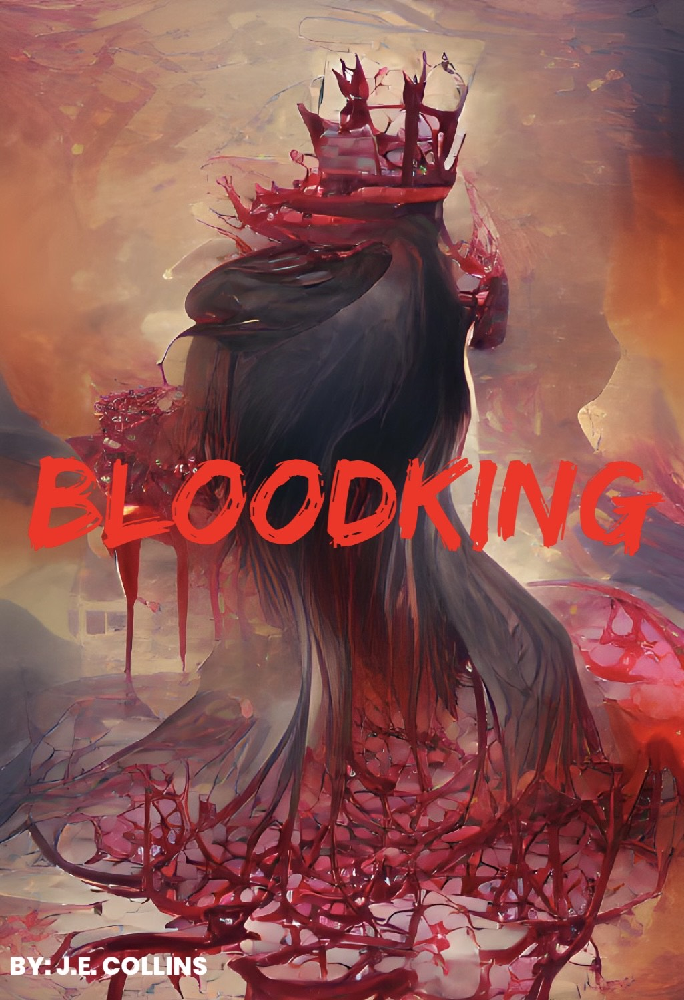
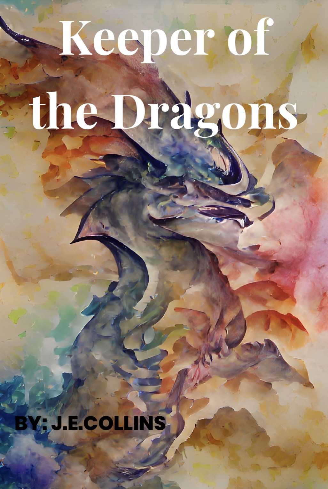
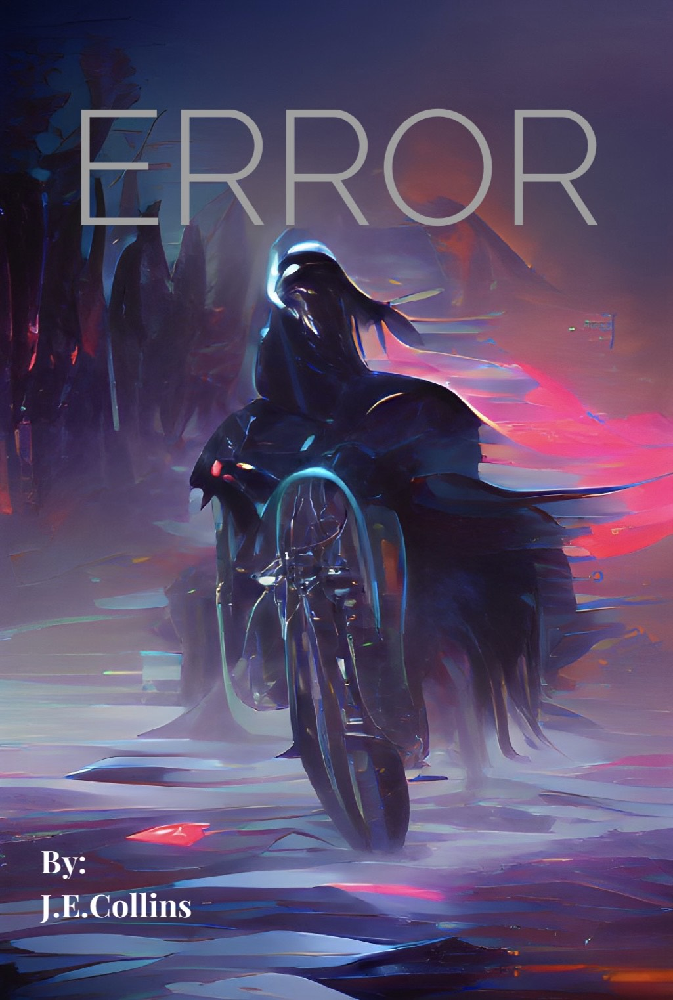

Process of Publishing Writing Tips Writing Practice Home Page Publish With Us
Bellow are the books awesome writers have created. All money goes to the writer, we ourselves only get 3% of it.
Genre: Mystery
Recommended Audiance: Teen - Adult
Price: $20.99
Detective Jacob Postal is working on the case of a mass serial killer named Bloodking. The need to capture this killer has rised when a newcomer, believed to be the side-kick of Bloodking has come to light. The detective has asked the help of a woman, Kara Johnson. The two scour victorian England searching for the sidekick hoping to find the link and identity to the killer. Order
Genre: Fantasy, Adventure
Recommended Audiance: Teen - Adult
Price: $19.99
Medousa Hart lost her grandfather due to natural causes. After his death he left behind his house along with acres of land. In her exploration she has found a few new surprises in the barn Now a few new pets have been added to her houshold, while Draco Inc. has different plans for her new pets.Order
Genre: Sci-Fi, Action, Adventure
Recommended Audiance: All
Price: $24.99
In a futuristic world, a new superpower has developed. There is no need for agents or guards or police officers anymore when you have Error's in the world. People who don't apply to the normal human gene code. However, corruption has begun to surface in this futuristic world and it is time to pick a side. Order
Genre: Fantasy, Romance, Action, Adventure
Recommended Audiance: Your Adult
Price: $19.99
In a realm of elves, warlocks, faey, and drawves. There once lived a princess, the eldest daughter of the great elvean king. Beloved by her people and others that meet her. However when she bumps into a arrogant selfih, loudmouth; she finds her patience tested as she is in charge of babysit - guiding the arrogant welp. But forces much powerful than them have been anticipating this moment, ready to strike. Order